ARC226 C - Square Corner Packing
正方形詰め込み
考え方
場合分けをして考える。
$(\mathrm{i})$ $H$ と $W$ がともに偶数の場合
この場合、左上詰めで $2 \times 2$ の小正方形を並べれば、全体を埋め尽くすことができる。
これは明らかに最大値であるので、それを答えればよい。
$(\mathrm{ii})$ $H$ は偶数で、$W$ が奇数の場合
マスの選び方の規則からして、各行各列から選べるマスは偶数個である。
つまり、この場合、各行 $W-1$ 個しか黒く塗ることはできない。
したがって、黒く塗れる個数は、高々 $H(W-1)$ 個である。
これは、左上詰めで $2 \times 2$ の小正方形を並べれば、達成可能である。
$(\mathrm{iii})$ $H$ は奇数で、$W$ が偶数の場合
$(\mathrm{ii})$ の $H$ と $W$ が入れ替わっただけなので、同じ議論でよい。
$(\mathrm{iv})$ $H=W$ の正方形で、それを $4$ で割った余りが $1$ である場合
これは、各行各列から少なくとも $1$ つ余りが出る。
それを行や列が重複しないように取ったとしても、黒く塗れる個数は高々 $H(H-1)$ 個。
そして、これは実現できる。
まず、縦横の中央ラインを除くと、辺長 $(H-1)/2$ の正方形 $4$ つになる。
これらはそれぞれ、$2 \times 2$ の小正方形 $(H-1)^2/16$ 個で埋めることができる。
その状態から、対角線を踏んでいる小正方形を時計回りに $1$ マス移動する。
移動先に別の小正方形があれば、中央ラインのところまで再帰的に押し出す。
（下にある動作例に、$9 \times 9$ の場合の画像あり）
これにより、対角線上、中央から偶数マスのところが全て白マスに戻った。
よって、ここに同心正方形を $(H-1)/4$ 個追加でとることができる。
以上で、正方形を $(H-1)^2/16\times 4+(H-1)/4 = H(H-1)/4$ 個取れた。
黒マスの個数は $H(H-1)$ 個となっており、これが最大値である。
$(\mathrm{v})$ $H,W$ が異なる奇数で、小さい方を $4$ で割った余りが $1$ である場合
$H>W$ の場合を考える。
各行の黒マス数の考察により、黒く塗れる個数は高々 $H(W-1)$ 個。
そして、これは実現できる。
まず、上に $W \times W$ の正方形を取り、$(\mathrm{iv})$ の方法で塗る。
この時点で黒マスの個数は $W(W-1)$ 個となる。
その後、残りの $(H-W) \times W$ の領域は、$H-W$ が偶数であることから、$(\mathrm{ii})$ の方法で塗る。
追加で塗られる黒マスの個数は $(H-W)(W-1)$ 個となる。
両方を合わせて黒マスの個数は $H(W-1)$ 個となり、これが最大値である。
$H<W$ の場合も同様。
$(\mathrm{vi})$ $H,W$ が異なる奇数で、小さい方を $4$ で割った余りが $3$ である場合
$H>W$ の場合を考える。
各行の黒マス数の考察により、黒く塗れる個数は高々 $H(W-1)$ 個。
しかし、黒マスの個数は $4$ の倍数でなくてはならない。
$H(W-1)$ は $4$ で割った余りが $2$ であるため、高々 $H(W-1)-2$ 個と修正できる。
そして、これは実現できる。
まず、左上に $(W-2) \times (W-2)$ の正方形領域を取り、ここを $(\mathrm{iv})$ の方法で埋める。
この時点で黒マスの個数は $(W-2)(W-3)$ 個となる。
その後、残りの領域を、右下詰めで $2 \times 2$ の小正方形を並べる。
これにより塗られる範囲は、$(H-1)\times (W-1)$ の長方形から $(W-3)^2$ の正方形を取り除いた部分。
両方を合わせて黒マスは $(W-2)(W-3)+(H-1)(W-1)-(W-3)^2 = H(W-1)-2$ 個。
これが最大値である。
$H<W$ の場合も同様。
まとめ
以上の考察により、コードは $2$ 種類あれば全パターンに対応できる。
まず、少なくとも片方が偶数の場合。
これは、左上詰めで $2 \times 2$ の小正方形を並べればよい。
そして、両方が奇数の場合。
まず、$H,W$ の小さい方以下で、$4$ で割ると $1$ 余る最大数を探す。
その数を辺長に持つ正方形領域を左上に取り、$(\mathrm{iv})$ の方法で埋める。
そして、残りの領域は右下詰めで $2 \times 2$ の小正方形を並べればよい。
各テストケースの計算量は $O(HW)$。
全テストケースでは $O\left(\sum HW\right)$。
動作例
ここでは、$H = 11$, $W = 13$ のテストケースを考える。
これらはともに奇数なので、両方が奇数の場合の処理を行う。
まず、$4$ で割って $1$ 余る最大内包正方形の辺の長さを求めると、$9$ である。
前半では、左上の $9 \times 9$ の範囲（下図の緑範囲）を構築する。
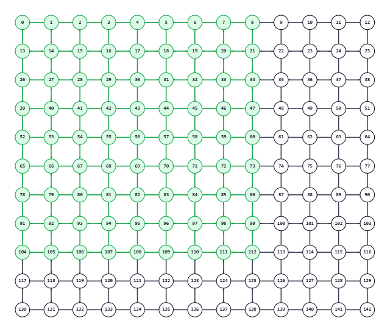
左上の $1/4$（下図の青範囲）では、$i = 1, 3$、$j = 1, 3$ を順に見る。
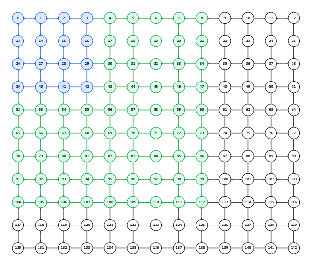
それぞれ、そこを左上とする $2\times2$ の正方形を採用する。
ただし、$i \leq j$ であれば、$1$ つ右にずらして採用する。
結果、次の $4$ 個（下図の赤と黄色）が追加される。
| $i$ | $j$ | $i \leq j$ | 実際の値 |
|---|---|---|---|
| 1 | 1 | 真 | (1, 2, 1) |
| 1 | 3 | 真 | (1, 4, 1) |
| 3 | 1 | 偽 | (3, 1, 1) |
| 3 | 3 | 真 | (3, 4, 1) |
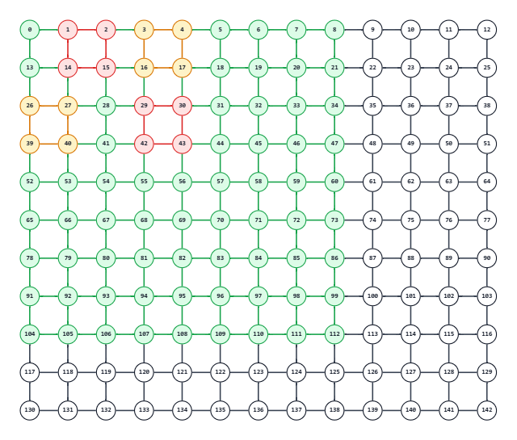
右上の $1/4$（下図の青範囲）では、$i = 1, 3$、$j = 6, 8$ を順に見る。
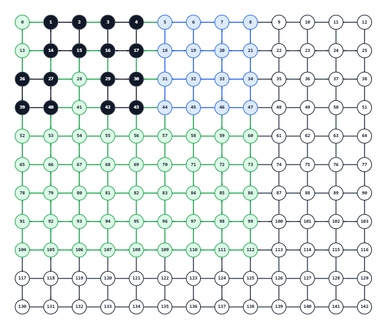
それぞれ、そこを左上とする $2\times2$ の正方形を採用する。
ただし、$i+j \geq 9$ であれば、$1$ つ下にずらして採用する。
結果、次の $4$ 個（下図の赤と黄色）が追加される。
| $i$ | $j$ | $i+j \geq 9$ | 実際の値 |
|---|---|---|---|
| 1 | 6 | 偽 | (1, 6, 1) |
| 1 | 8 | 真 | (2, 8, 1) |
| 3 | 6 | 真 | (4, 6, 1) |
| 3 | 8 | 真 | (4, 8, 1) |
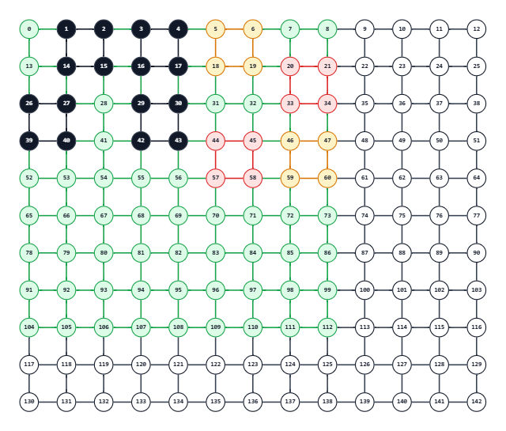
左下の $1/4$（下図の青範囲）では、$i = 6, 8$、$j = 1, 3$ を順に見る。
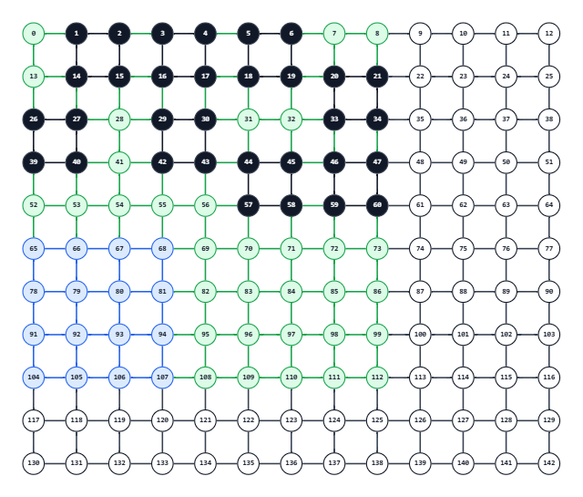
それぞれ、そこを左上とする $2\times2$ の正方形を採用する。
ただし、$i+j \leq 9$ であれば、$1$ つ上にずらして採用する。
結果、次の $4$ 個（下図の赤と黄色）が追加される。
| $i$ | $j$ | $i+j \leq 9$ | 実際の値 |
|---|---|---|---|
| 6 | 1 | 真 | (5, 1, 1) |
| 6 | 3 | 真 | (5, 3, 1) |
| 8 | 1 | 真 | (7, 1, 1) |
| 8 | 3 | 偽 | (8, 3, 1) |
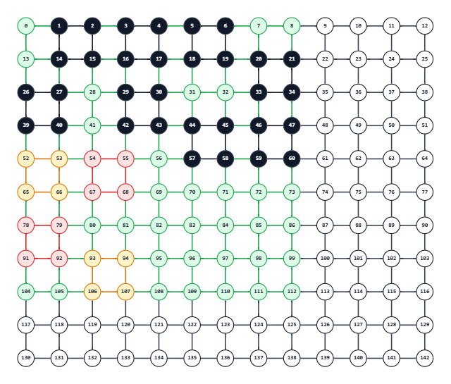
右下の $1/4$（下図の青範囲）では、$i = 6, 8$、$j = 6, 8$ を順に見る。
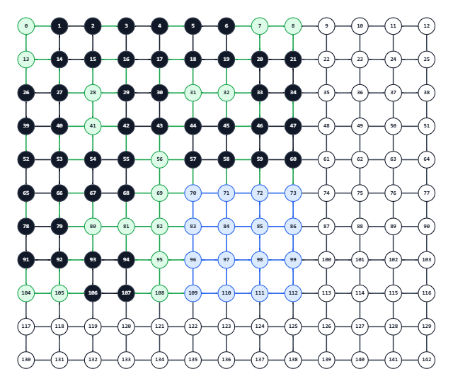
それぞれ、そこを左上とする $2\times2$ の正方形を採用する。
ただし、$i \geq j$ であれば、$1$ つ左にずらして採用する。
結果、次の $4$ 個（下図の赤と黄色）が追加される。
| $i$ | $j$ | $i \geq j$ | 実際の値 |
|---|---|---|---|
| 6 | 6 | 真 | (6, 5, 1) |
| 6 | 8 | 偽 | (6, 8, 1) |
| 8 | 6 | 真 | (8, 5, 1) |
| 8 | 8 | 真 | (8, 7, 1) |
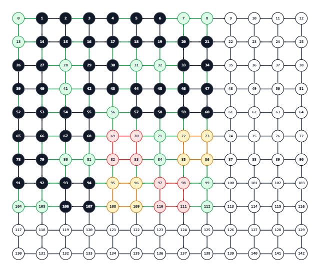
そして、対角線上の処理を行う。
$9 \times 9$ の中心から、対角線に沿って偶数マス行ったところにある頂点で正方形を作る（下図の赤と黄色）。
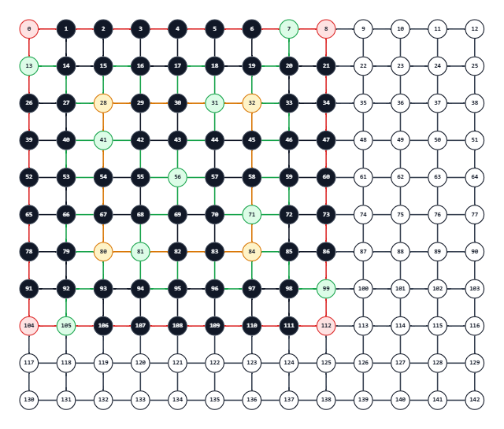
ここまでで、採用した正方形は $4 \times 4 + 2 = 18$ 個となる。
後半では、左上の $9 \times 9$ 以外の部分を埋める。
これは、右下詰めで、$2 \times 2$ の正方形を埋めればよい（下図の赤と黄色）。
(2, 10, 1), (2, 12, 1)
(4, 10, 1), (4, 12, 1)
(6, 10, 1), (6, 12, 1)
(8, 10, 1), (8, 12, 1)
(10, 2, 1), (10, 4, 1), (10, 6, 1), (10, 8, 1), (10, 10, 1), (10, 12, 1)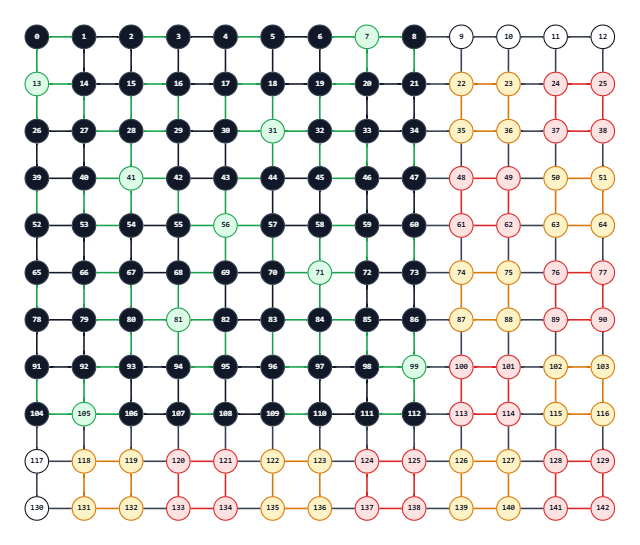
左上の $9 \times 9$ の範囲で $18$ 個、それ以外の範囲で $14$ 個追加したので、採用した正方形は $32$ となる。
実際の出力は次のようになる。
32
1 2 1
1 4 1
3 1 1
3 4 1
1 6 1
2 8 1
4 6 1
4 8 1
5 1 1
5 3 1
7 1 1
8 3 1
6 5 1
6 8 1
8 5 1
8 7 1
1 1 8
3 3 4
2 10 1
2 12 1
4 10 1
4 12 1
6 10 1
6 12 1
8 10 1
8 12 1
10 2 1
10 4 1
10 6 1
10 8 1
10 10 1
10 12 1注意点
特になし。
別解
特になし。